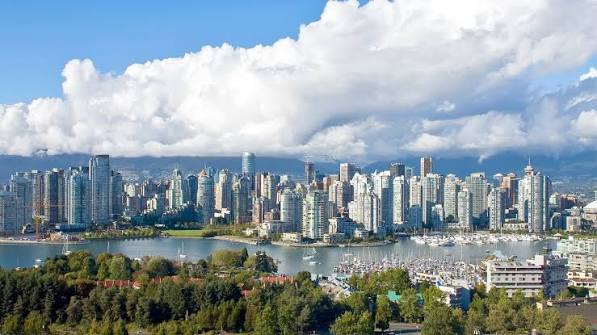
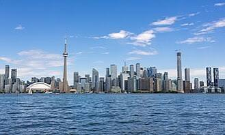
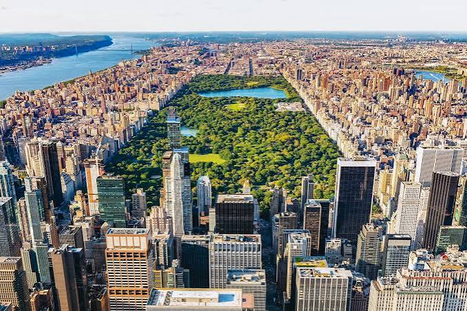
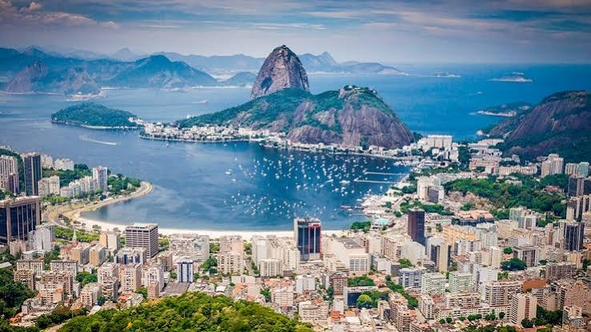
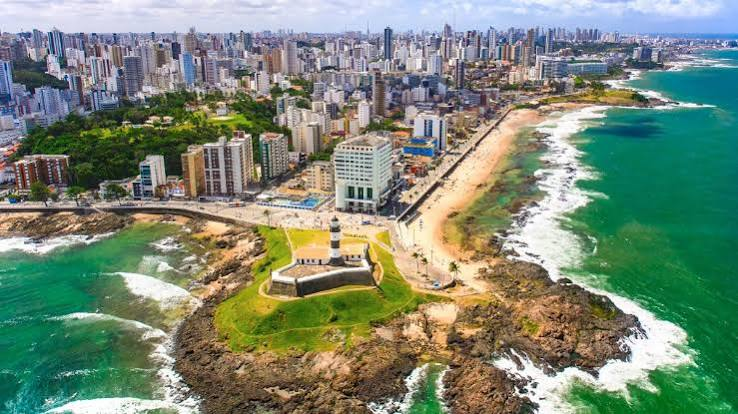

1 - Vancouver

Vancouver é extremamente linda, seu destaque foram os bares e pontos turísticos.
Voltar ao topo

Vancouver é extremamente linda, seu destaque foram os bares e pontos turísticos.

Toronto tem a estética de metrópole, ótima cidade para aproveitar a noite.

Nova York tem uma infinitude de possibilidades de passeios para todos os períodos do dia, quem visitar nunca ficará parado.

Sempre muito linda e animada, o único defeito do Rio de Janeiro é a temperatura extremamente gelada do seu mar.

A lindíssima Salvador se destaca pela quantidade de igrejas históricas e a infinidade de pontos turísticos.